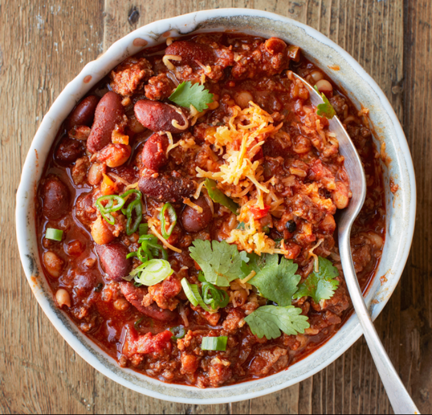

| Quantity/Unit of Measure | Ingredient |
|---|---|
| 1/3 Cup | Vegetable Oil |
| 2 Cloves | Chopped Garlic (or 1 tsp Crushed Garlic) |
| 1 | Large White Onion (Diced) |
| 3 Lbs | Ground Beef |
| 2 28 oz Cans | Petite Diced Tomatoes |
| 1 46 oz Bottle | Tomato Juice |
| 1 | Teacher |
| Cookie Monster | Cookie Eater |
| 1/3 Cup | Nerd |
| 2 | Being awesome |
| 1 | Teacher |
| Cookie Monster | Cookie Eater |
Patrick spent most of the profile creation period unsuccessfully attempting to add a background image of the Carina Nebula. He doesn't have a great explanation as to why he chose that image/celestial body, but he knows that he didn't do it correctly.